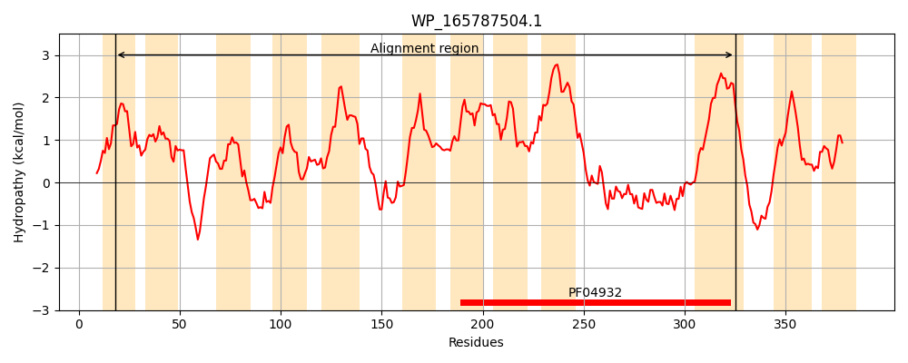
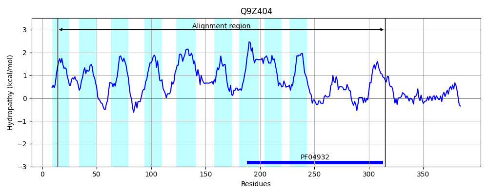
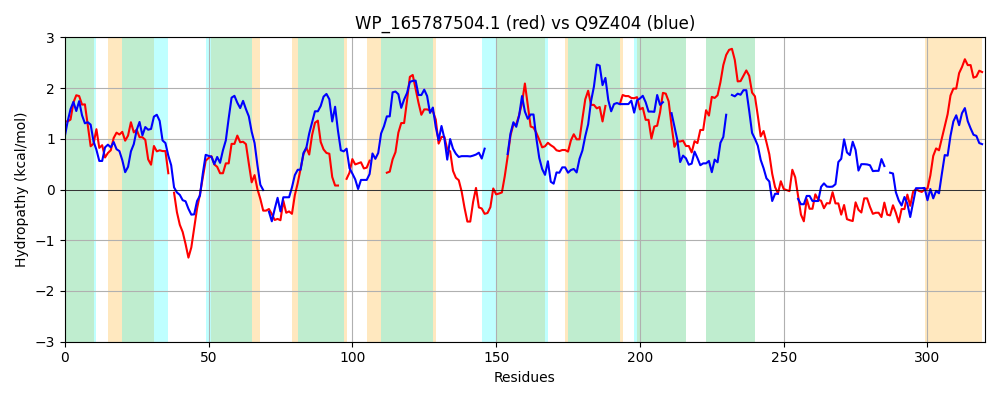

Hit Accession: Q9Z404
Hit TCID: 9.B.67.6.3
Hit Description: gnl|BL_ORD_ID|19570 gnl|TC-DB|Q9Z404|9.B.67.6.3 Putative uncharacterized protein ttn OS=Pseudomonas putida GN=ttn PE=4 SV=1
Mach Len: 320
e:0.000000
Query TMS Count : 12
Hit TMS Count: 9
TMS-Overlap Score: 6.800000
Predicted Substrates:None
BLAST Alignment:
Score: 154 , Bit scores: 63 bits, E-value: 3.1e-11, Alignment length: 320, Percentage identity: 26
Query: 18 FPLFLFFSAIFCMSTRTNNLLHLSILLLLLSLVRQEN-RQALAGVLREQWQTWTLLAAFFIYYALSNLWGHTPQHIDSPITHGVYLTGYLLLMTML--LSDERTRRL-----AMLAVVGGITVLSLWTLIIDHTLVLTERAVSPENPGPTNVIDLAGYCGIGILICGMLLKEKASHWLYLPVVIMLVML----LLTQSRGPIIALVLAVGCTLHLHVFTRRNLLIAAALAVLVALLLVMTPVGDMLLARFEELGTQSGLRLSIWHHTLSEMASQPWLGRGFSYELDFINYSGEHITTTHSVYMGALLKGGILGLLLLLAV 325
F L F +AI + L + L L +LV + R + R Q W + ++ LS +W ++ +Y+ +LL +L L R R+L A+LAV I+V+ + ++ L E +P + G IG + +L + L L ++ LV L +L+QSRG ++ALVL V L F R+ + A LA +A L V D++ R S R I+H +A+ PW G G D +N G H TH+++ ++ G+ G+LL + V
Sbjct: 14 FGLLWFLAAIALAPSNKVYQQGLVLFLWLPTLVMAWSARHVIMQAWRRQPALWGSVLLLLVWSGLSLVWS-AAENPGREAKRLLYILVFLLAFPLLGQLGQARVRQLLQAGSALLAVAALISVIHFYGVLGMPLLARLEGIGEISHP-------ILGAYVIGSAVLFLLYEPPRQRGLQLLWLVALVCLGLFVMLSQSRGAVLALVLTV--ILAPLWFRDRHSRVFAVLAA-IATGLAFYLVYDLIAQR------GSSYRPEIFHAVADMIAAHPWTGLGLGAAYD-VNAVGMHFDHTHNMFTHVAVEMGLPGMLLWVMV 315 | Protein Hydropathy Plots: |
|---|
|  |  |
Pairwise Alignment-Hydropathy Plot:
|
|---|
|  |